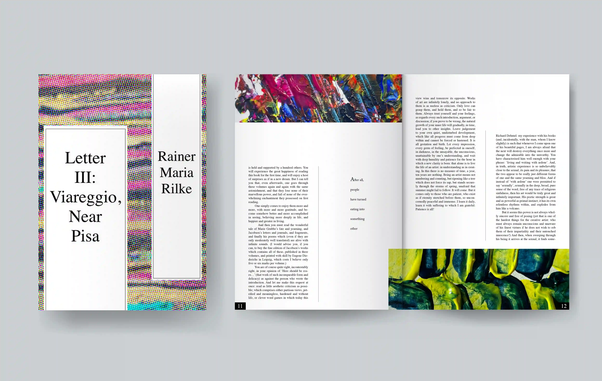
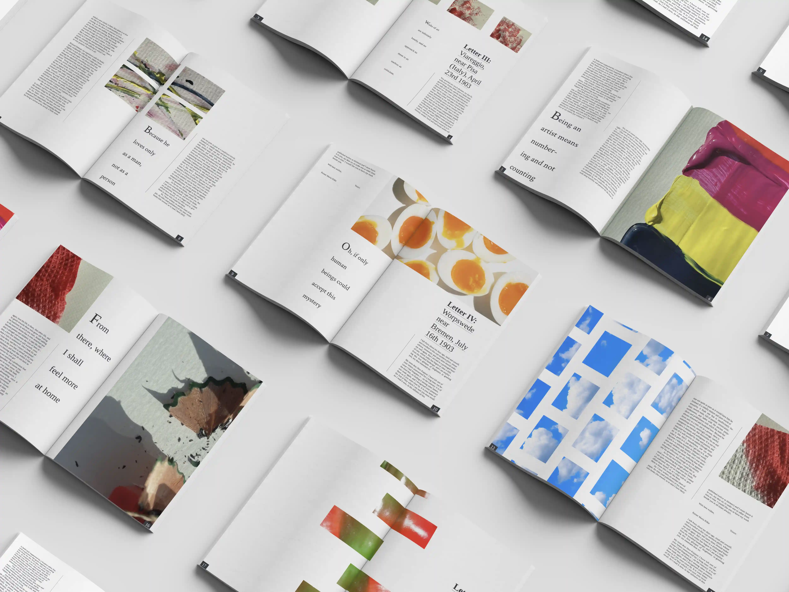
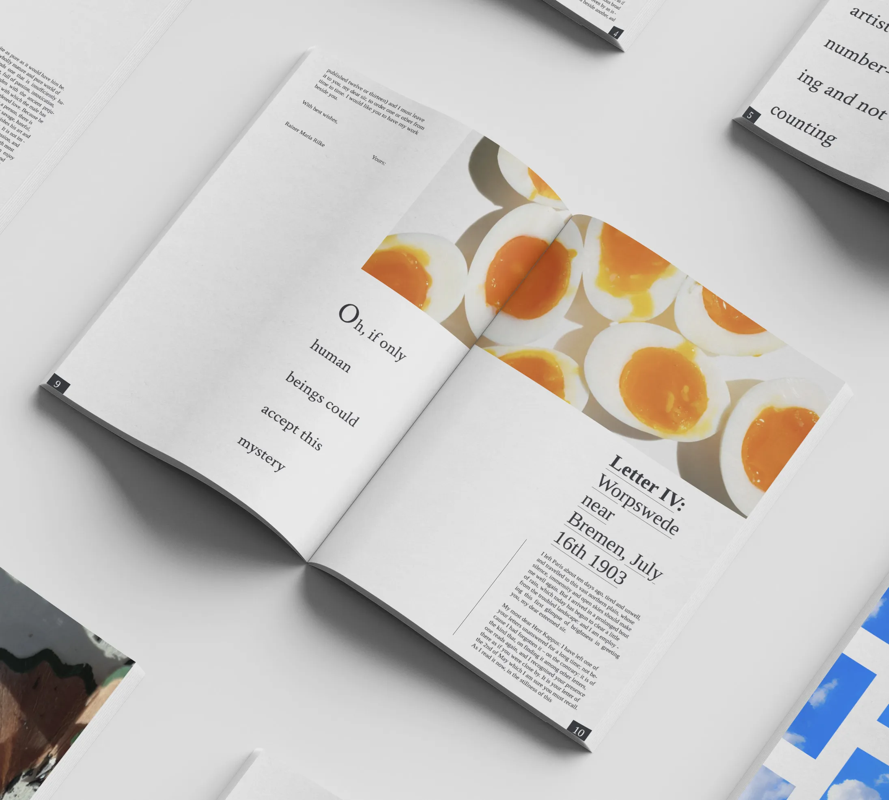
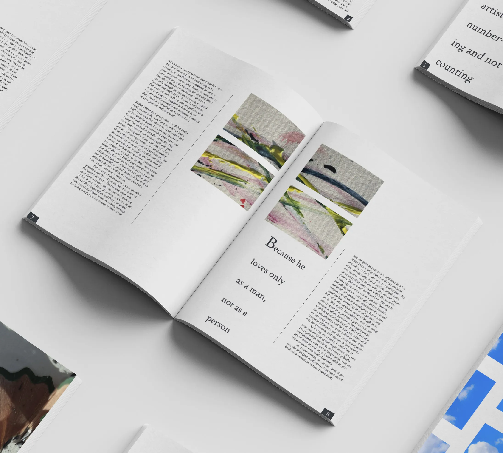
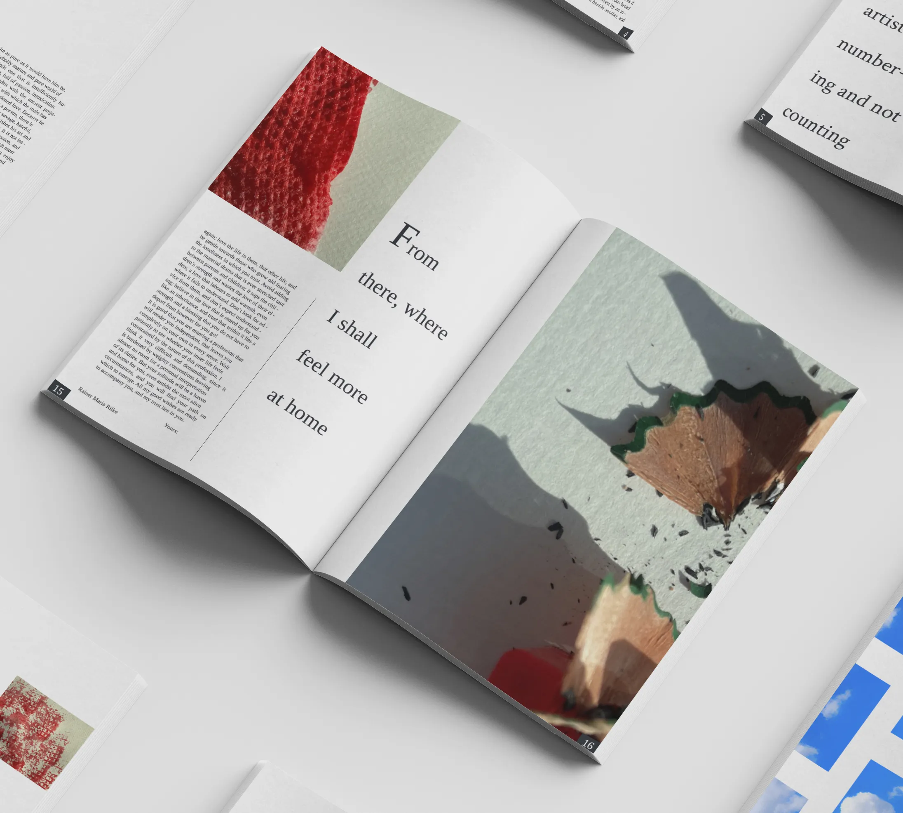

-
Letters To A Young Poet
-
Book Design
-
InDesign, Photoshop
-
About
-
A booklet designed around an excerpt from Rainer Maria Rilke's Letters to a Young Poet, a text fundamentally
about patience, uncertainty, and the slow work of becoming. The image selection reflects that theme directly:
paint drying, a bell pepper ripening, a quilt being knitted — things that cannot be rushed.




